Bonjour ! 👋
Moi, c’est Adalina Madeline-Hélou, j’ai 18 ans et je suis originaire de Brest. Depuis toute petite, je transforme les feuilles blanches en terrains de création. Dessin, graphisme, animation : chaque support devient un espace de jeu.
Aujourd’hui, j’ai posé mes valises à l’IUT de Lannion en BUT Métiers du Multimédia et de l’Internet. Un cursus qui mêle graphisme, audiovisuel et développement web, exactement ce qu’il faut pour transformer une idée en projet numérique.
À l’avenir, j’aimerais m’orienter vers la stratégie de communication numérique et le design d’expérience, pour intégrer un univers qui me suit depuis longtemps : YouTube. Curieuse et persévérante, mon objectif est d’accompagner des créateurs, de gérer des tournages, d’imaginer des concepts et de construire des projets créatifs en ligne.
Alors, prêt(e) à explorer mon univers ? 👀
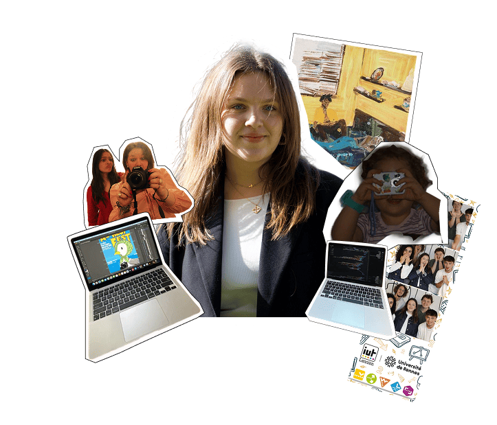
Mon parcours scolaire en un coup d'œil. 👀
BACHELOR UNIVERSITAIRE DE TECHNOLOGIE
2025 - 2028
Métiers du Multimédia et de l’Internet
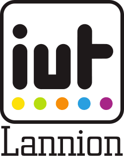
IUT de Lannion (22)
BACCALAURÉAT SÉRIE GÉNÉRALE
2025
Anne-Marie Javouhey - Brest (29)
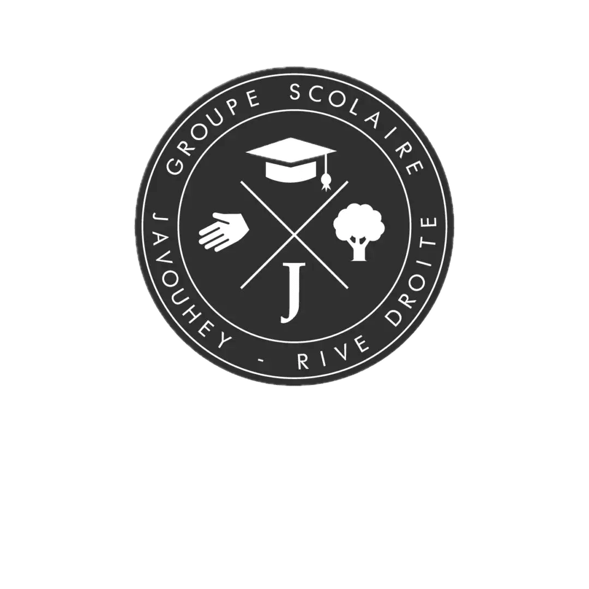
Groupe Scolaire Javouhey
Ce que je sais faire, et ce que j'apprends encore. ✍️
Design Graphique
Stratégie de Communication
Audiovisuel
Gestion de Projet
Quelques projets qui parlent mieux que moi. 🧑🎨
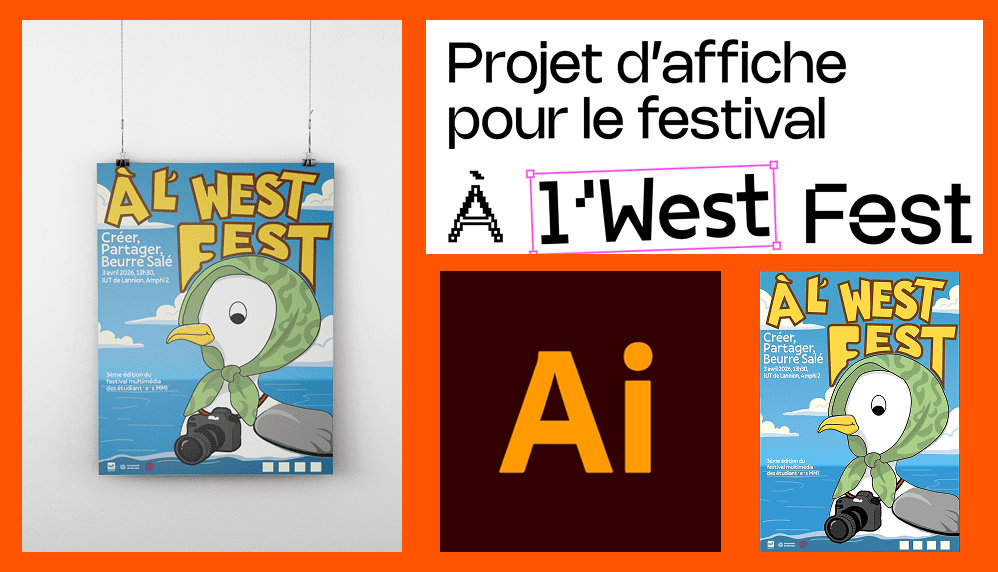
Design d'Affiche, Festival "À l'West Fest"
Janvier 2026
Affiche créée pour le festival multimédia À l'West Fest, dans le cadre d'un projet universitaire en agence de communication à l'IUT de Lannion.
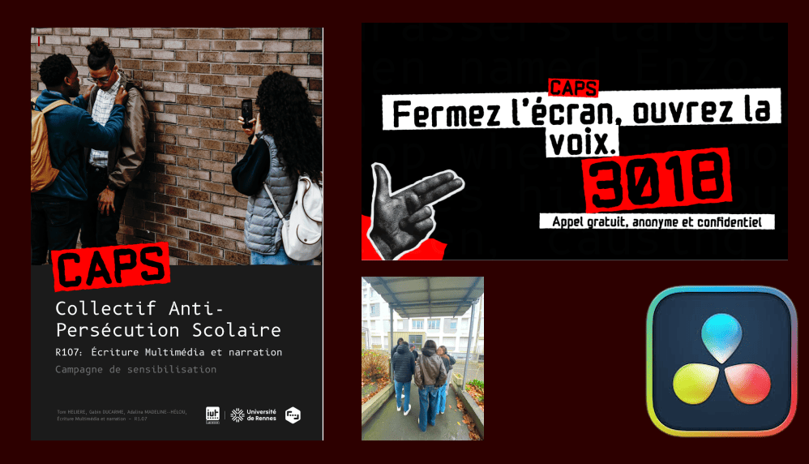
"Ouvrir la voix", court-métrage
Décembre 2025
Un court-métrage de sensibilisation au cyberharcèlement, à l'ambiance sombre et dystopique inspirée de Black Mirror.
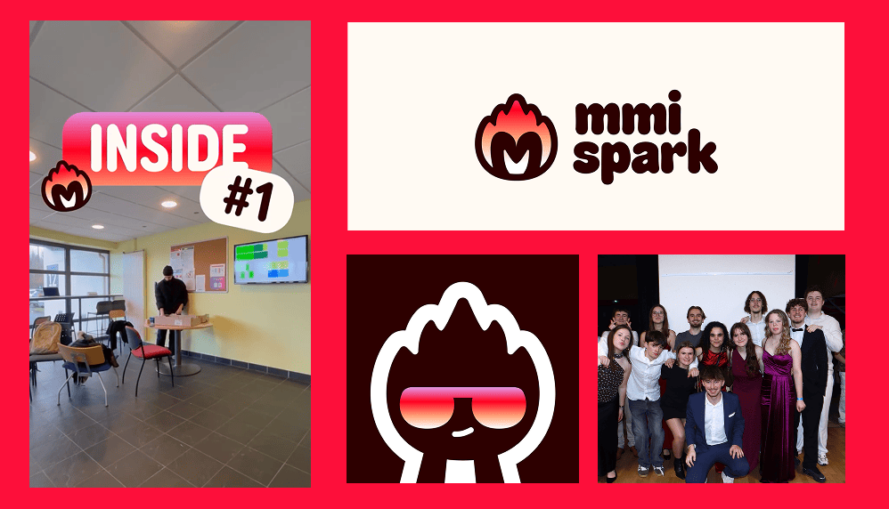
Les Insides, MMI Spark
Actuellement
Contenu vidéo, réseaux sociaux et vie de campus. Les coulisses du BDE MMI Spark en images.
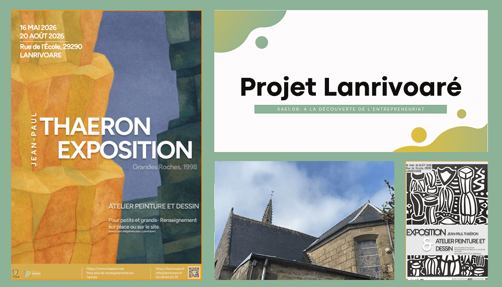
Le projet Lanrivoaré
Décembre 2025
Valoriser un village de moins de 2000 habitants grâce au numérique. Un défi de communication à l'échelle locale et internationale.
Envie de tout relire depuis le début ?
↑ RecommencerDesign Graphique
Conception d'identités visuelles et transformation d'informations en éléments graphiques impactants.
Soft Skills
Le graphisme me permet de développer ma créativité et mon sens du détail afin d'assurer une cohérence visuelle. C'est un domaine qui me passionne, et que j'ai hâte de continuer à explorer et à développer.
Compétences techniques
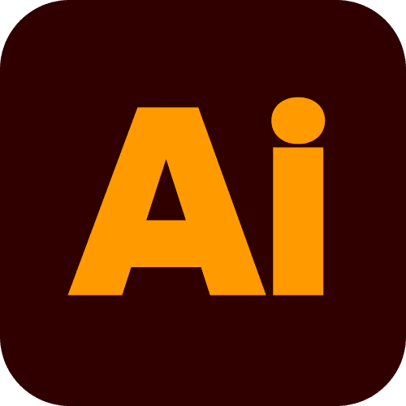
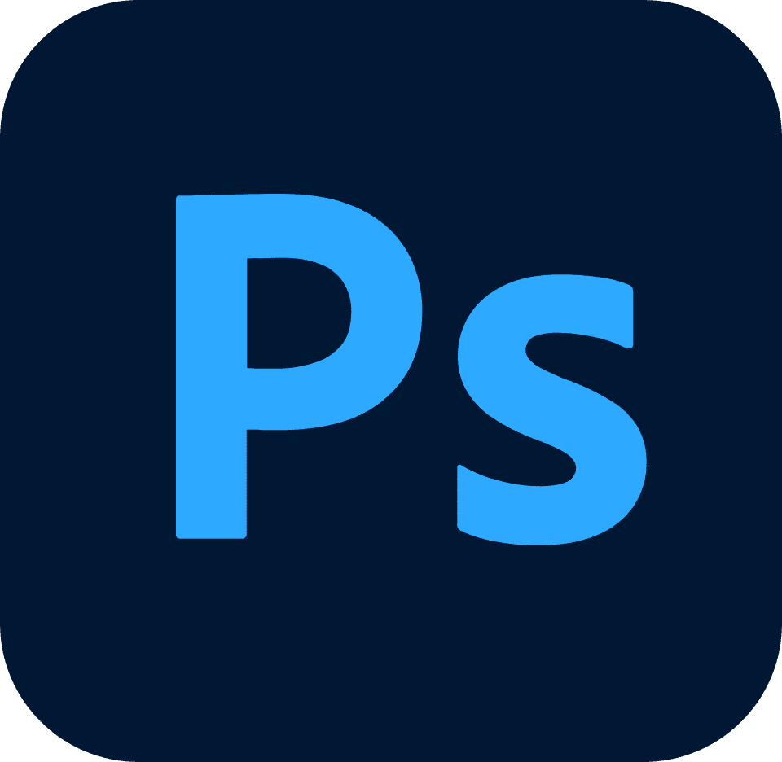
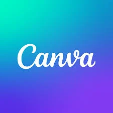
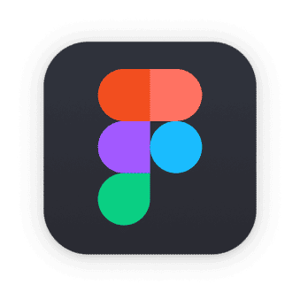
Exemple d'un portrait sur Illustrator
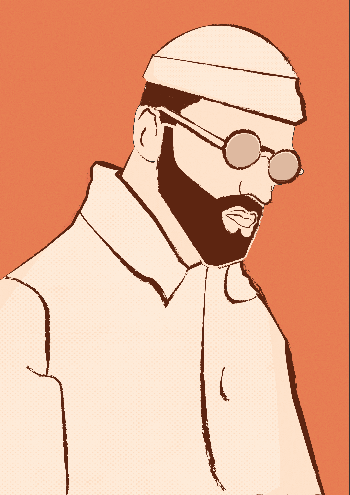
Exemple d'un projet sur Procreate
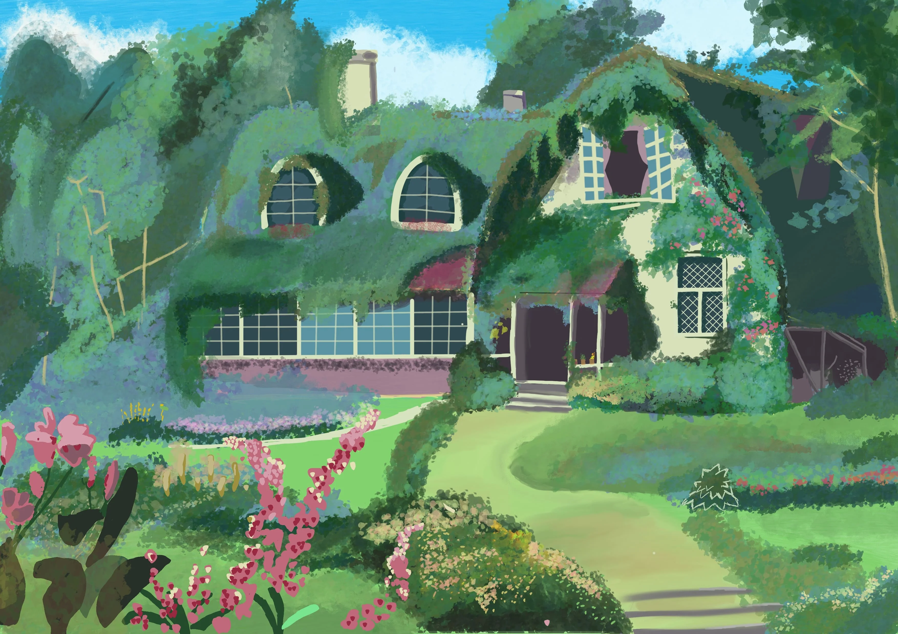
Exemple d'un projet Photoshop
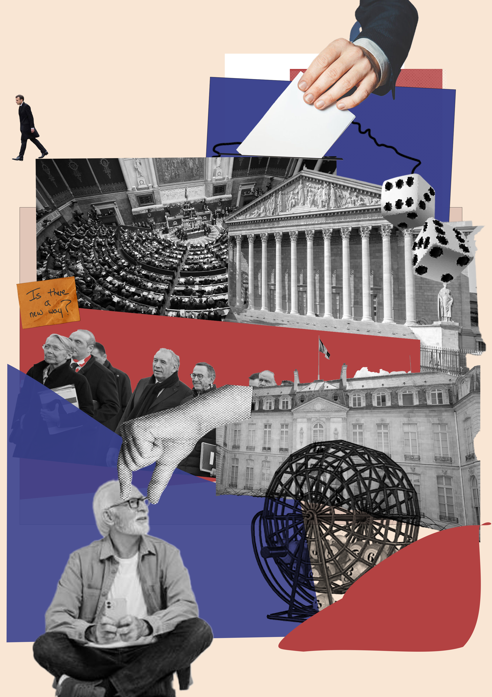
Audiovisuel
Production audiovisuelle complète de la conception du script au montage et à l'étalonnage
Soft Skills
L'audiovisuel me permet de développer ma communication, notamment pour échanger avec les équipes et pour pouvoir travailler efficacement. Mais également mon adaptibilité, pour gérer les imprévus du tournage et des projets et s'adapter aux contraintes.
Exemple d'un podcast
Exemples création de vlogs
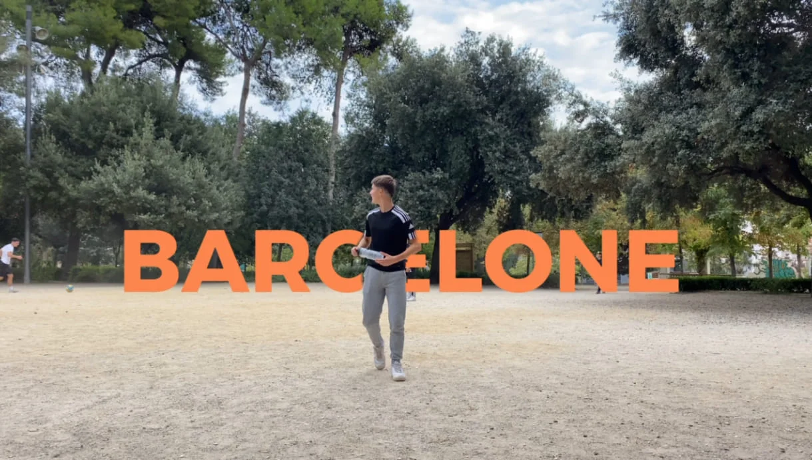
Marketing et Gestion de projets
Traduire des objectifs commerciaux en plans d'action marketing structurés, mesurables et à fort impact. Assurer la gestion de projets de bout en bout, en coordonnant les équipes impliquées et en veillant au respect des échéances.
Compétences techniques
Soft Skills
Avec la gestion de projet, j'ai su développer mon organisation et la planification. Autrement dit, apprendre à respecter les délais, à anticiper les étapes d'un projet et à gérer les ressources de manière efficace.
Exemple d'une organisation d'un projet
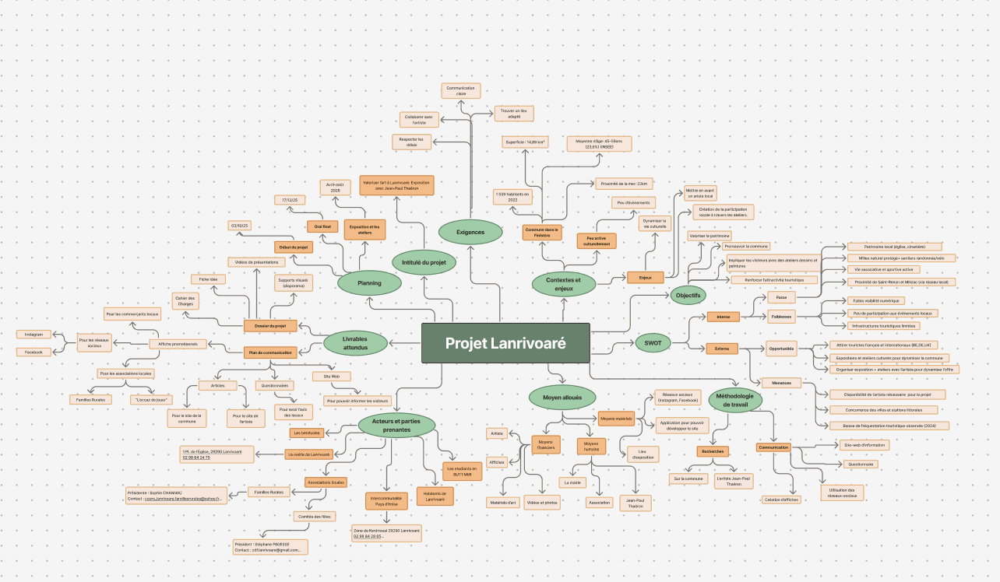
Stratégie de communication
Valorisation de marques et produits via des stratégies de communication multi-supports et gestion de contenus sur réseaux sociaux.
Soft Skills
La stratégie de communication développe ma capacité à analyser les enjeux et à construire une réflexion structurée pour valoriser efficacement un produit ou une marque.
Compétences techniques
Design d'affiche, le festival "À l'West Fest"
Dans le cadre d’un projet universitaire mené au sein de l’IUT de Lannion, avec mon agence de communication, j’ai réalisé une affiche pour le festival multimédia ”À l’West Fest”.L’objectif était de valoriser l’événement tout en transmettant les informations essentielles du festival, afin d’attirer le public cible, composé principalement des étudiants MMI, des étudiants de l’IUT ainsi que du personnel de l’IUT.
La production
Pour ce projet, avec mon agence, nous avons d'abord identifié les éléments clés du festival via une carte mentale. Puis chacun de nous avons réalisé des croquis. Mon idée principale était de créer une affiche qui rappellait le multimédia pour faire référence à la filière MMI, mais je voulais également mettre en avant les élements typiques de la Bretagne (mer, phare, etc.). J'ai ensuite conçu une première maquette sur Adobe Illustrator pour structurer l'affiche,
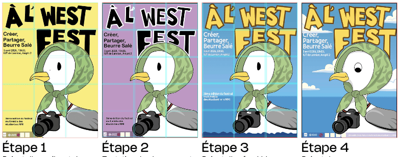
En fonction des retours reçus, j'ai apporté plusieurs ajustements sur la composition, les éléments graphiques et la lisibilité pour aboutir au rendu final.
Les compétences mobilisées
Le résultat final
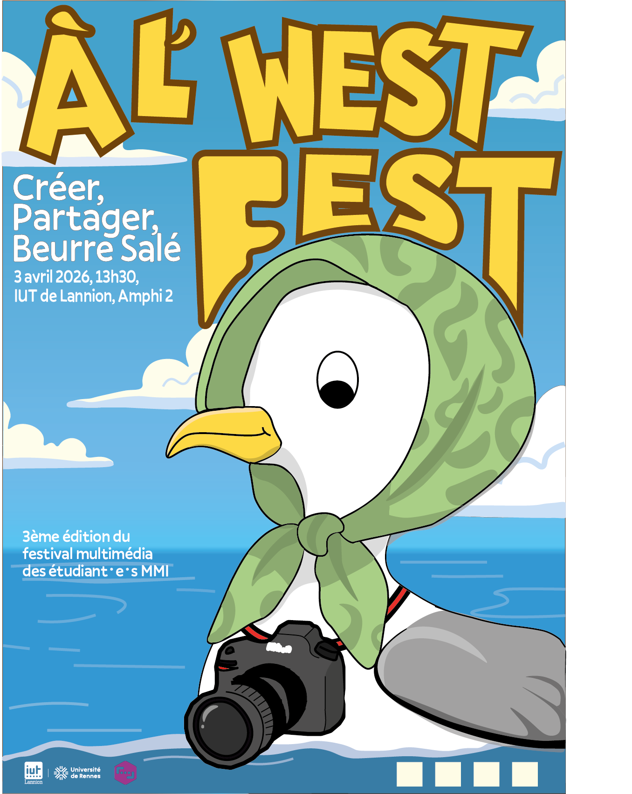
Mon affiche n'a pas été sélectionnée pour le résultat final, mais j'ai reçu des retours très positifs sur la composition et les éléments graphiques, ainsi que sur la pertinence de l'affiche pour représenter le festival.
"Ouvrir la voix", le court-métrage
Dans le cadre d’un projet universitaire, mon équipe et moi avons réalisé un court-métrage de sensibilisation contre le cyberharcèlement intitulé “Ouvrir la voix”. Ce projet audiovisuel visait à alerter le public, notamment les adolescents, sur les dangers du harcèlement en ligne à travers une approche créative inspirée de l'univers dystopique de Black Mirror. Le film a été également traduite en anglais pour respecter les exigences du projet.
L'étape écrite
Pour ce projet, mon équipe et moi avons commencé par élaborer un scénario original sur le cyberharcèlement dans un open space, accompagné d'une note d'intention. Afin d'organiser au mieux le tournage, nous avons ensuite créé un storyboard et une shotlist. Le tournage s'est déroulé sur le campus avec du matériel audiovisuel professionnel, avant de passer à la phase de montage pour relier les scènes et donner vie à l'histoire. Aussi, pour toucher un public plus large, nous avons traduit le court-métrage en anglais, ce qui a ajouté une dimension supplémentaire à la production et nous a permis de sensibiliser davantage de personnes aux dangers du cyberharcèlement.
Le pitch
" Dans un bâtiment fictif, un open space lumineux, des employés travaillent méthodiquement. Leur mission : détruire Léa, leur cible du jour. Messages insultants, montages humiliants, rumeurs en ligne... Pendant ce temps, seul dans sa chambre sombre, Léa s'effondre face à l'écran. Mais au moment où Léa ferme son ordinateur, le bureau des harceleurs disparaît instantanément. Ce film de sensibilisation révèle que le cyberharcèlement n'a de pouvoir que si on reste connecté. La solution commence par un geste : fermer l'écran, ouvrir la voix."
Exemple de notre note de traitement
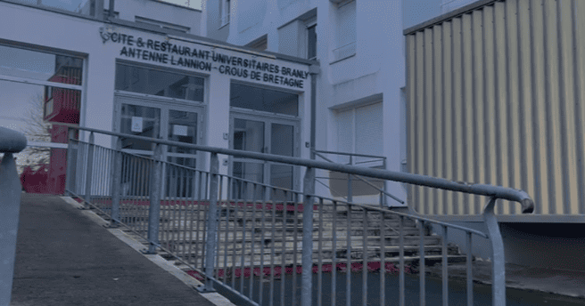
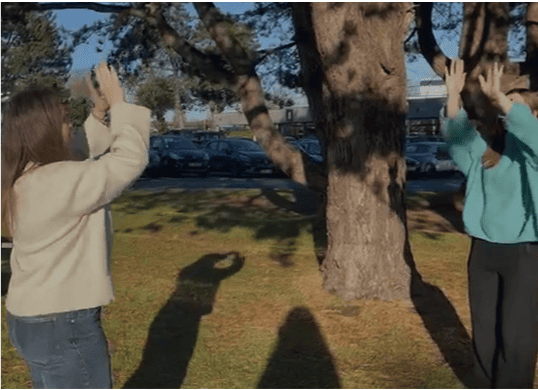
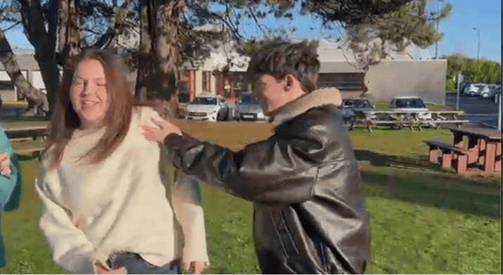
Exemple de notre storyboard
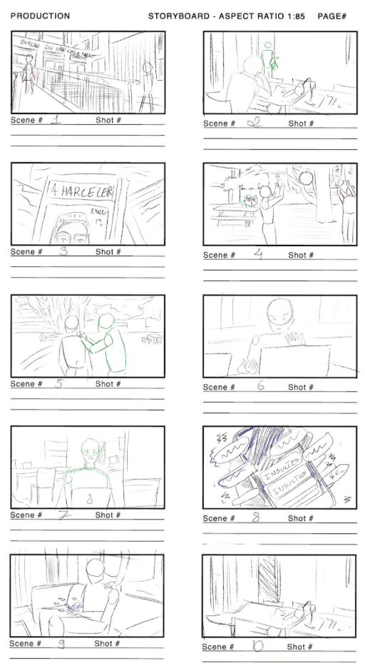
Lors de ce tournage, j'ai joué plusieurs rôles au sein de l'équipe. Pour commencer, j'étais actrice, mais lorsque je n'étais pas dans le champ, je m'occupais de la gestion du matériel et de la logistique du tournage. J'ai également participé au montage du film, en organisant les scènes et en choisissant les plans pour créer une narration fluide et impactante.
Les compétences mobilisées
Le résultat final
Notre court-métrage a été très bien accueilli par les enseignants et les étudiants, avec des retours positifs sur la qualité de la production, la pertinence du message et l'impact visuel. Ce projet a renforcé mon intérêt pour la création audiovisuelle et m'a donné envie de continuer à explorer ce domaine à travers de futurs projets.
"Les Insides", MMI Spark
Dans le cadre d’un projet personnel, je participe activement au Bureau des Étudiants MMI Spark à l’IUT de Lannion. Mon rôle en tant que responsable en communication consiste à réaliser chaque semaine des vidéos intitulées « Insides », un format mettant en avant les coulisses et la vie de l’équipe. Ces contenus sont diffusés sur Instagram et LinkedIn. L’objectif de ce projet est de valoriser le BDE, de renforcer sa visibilité auprès des étudiants et d’encourager l’adhésion et la participation aux événements organisés.
La production
Pour chaque vidéo, je commence par capter différents moments de la semaine avec l'équipe du BDE, en cherchant à révéler les coulisses de manière authentique. Je prends ensuite en charge l'intégralité du montage sur DaVinci Resolve et CapCut : sélection des meilleures séquences, assemblage et ajout de musique pour donner du rythme au contenu. Une fois la vidéo finalisée, je gère sa publication sur Instagram et LinkedIn, en rédigeant les descriptions adaptées à chaque plateforme. Je réfléchis également au format, à la durée et au rythme de chaque vidéo pour maximiser l'engagement et capter l'attention du public dès les premières secondes.
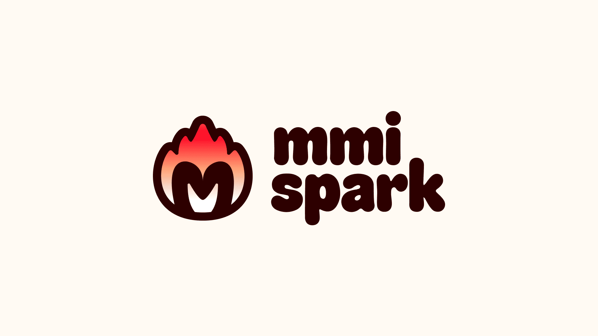
Les compétences mobilisées
Le résultat final
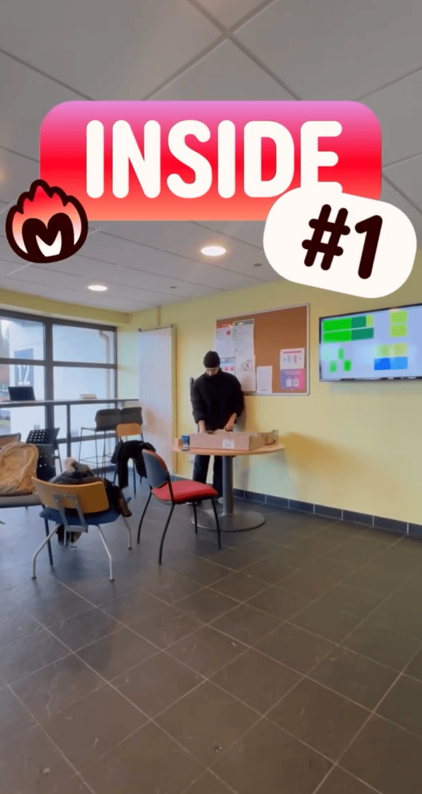
Les vidéos « Insides » ont rencontré un vrai succès auprès des étudiants, avec une augmentation régulière de l'engagement sur les publications. Les retours positifs de la communauté témoignent de l'impact de ces contenus sur la visibilité et l'attractivité du BDE MMI Spark.
→ Explorer la sérieLe Projet Lanrivoaré
Dans le cadre d’un projet universitaire mené à l’IUT de Lannion, j’ai travaillé avec mon groupe sur la valorisation du patrimoine d’un village de moins de 2000 habitants, sans façade maritime. Mon rôle consistait à participer à la conception et à la mise en œuvre d’une stratégie de communication numérique, en organisant des cahiers des charges, un planning et d’autres outils de gestion de projet. Ce travail avait pour objectif de développer nos compétences en gestion de projet et en communication numérique, tout en prenant en compte un public international.
La production
Le projet a débuté par une étude approfondie du village de Lanrivoaré, situé dans le Nord-Finistère. Nous avons commencé par recenser ses principales attractions et analysé la concurrence pour identifier les forces et faiblesses du territoire. Une visite sur place nous a permis d'observer directement son environnement et son patrimoine. À partir de ces éléments, j'ai contribué à la conception d'une carte mentale sur Figma pour structurer et visualiser l'ensemble du projet. Nous avons ensuite rédigé un cahier des charges détaillé, définissant notre concept central : la mise en valeur d'un artiste local, Jean-Paul Thaéron, à travers une exposition et l'organisation d'ateliers de dessin et de peinture ouverts au public. Pour promouvoir ces événements auprès d'un public international, j'ai participé à la création de vidéos de présentation entièrement en anglais. En parallèle, nous avons conçu une affiche destinée à être diffusée dans les commerces alentours, afin de toucher également le public local.
La carte mentale
Réalisation d'affiches pour la promotion
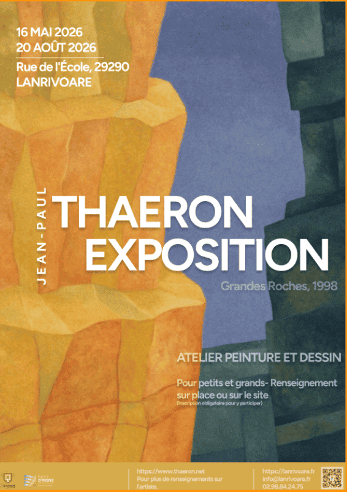
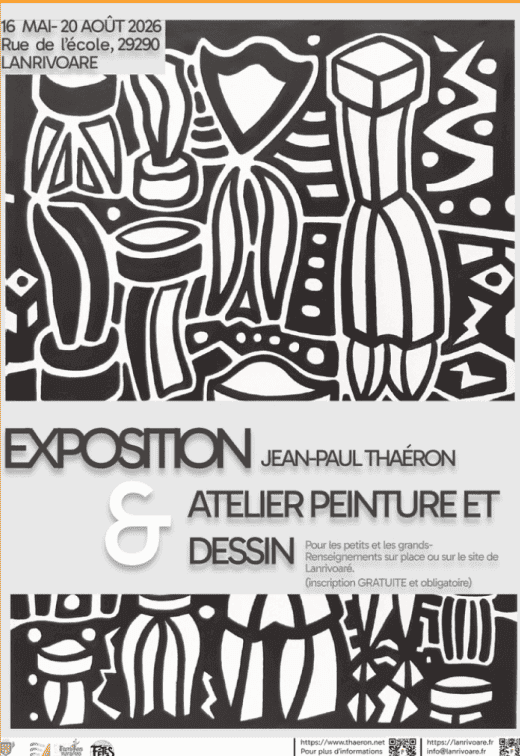
Les compétences mobilisées
Le résultat final
Retrouvez l'ensemble de la démarche et des livrables dans notre cahier des charges.
→ La fiche complète, c'est ici → Feuilleter le cahier des charges